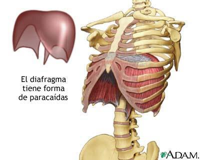
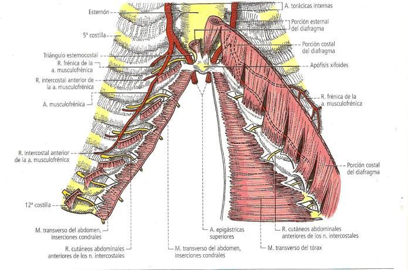
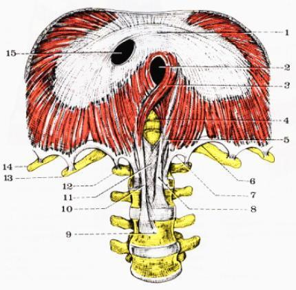
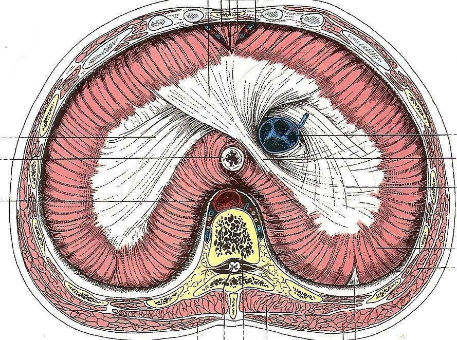
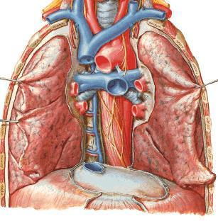

ClinicusMed · Dossiê Clinicus — Padrão de Excelência


| Inserção | Detalhe |
|---|---|
| Lombar | Pilares principais (direito/esquerdo) + pilares acessórios (ligamentos arqueados) |
| Costal | 5 arcos, do 12º ao 7º arco costal — todo o rebordo costal |
| Esternal | Face posterior do apêndice xifoide |

| Pilar | Inserção Vertebral |
|---|---|
| Pilar Direito (principal) | Faces anteriores de L1, L2 e L3 (às vezes L4) — mais longo/largo |
| Pilar Esquerdo (principal) | Faces anteriores de L1 e L2 (às vezes L3) |
| Pilares Acessórios | Inserem-se na face lateral do corpo de L2; originam o ligamento arqueado medial (arco do psoas) |
Dos pilares principais partem fibras: MEDIAIS (formam o hiato aórtico), LATERAIS (unem-se ao pilar acessório), e MEDIANAS (ligamento arqueado mediano, ao redor dos hiatos aórtico e esofágico).

Formado por fibras fundamentais (originadas dos fascículos musculares) e fibras de associação (formam as bandeletas semicirculares de Bourgery, que delimitam o orifício da VCI).
Constituição: série de músculos digástricos, com o centro tendíneo interposto. 2 cúpulas (direita mais alta, esquerda mais baixa), cada uma com 3 vertentes (anterior/posterior/lateral).
| Hiato/Forame | Nível | Estrutura(s) que passam |
|---|---|---|
| Foramen da VCI | T8, no centro tendíneo | Veia cava inferior + ramo abdominal do nervo frênico direito. É fibroso, quadrilátero, o MAIOR orifício |
| Hiato Esofágico | T10 — adiante, acima e à esquerda do hiato aórtico | Esôfago + 2 nervos vagos (esquerdo adiante, direito atrás). Totalmente MUSCULAR — funciona como esfíncter |
| Hiato Aórtico | T12 | Aorta + ducto torácico (atrás). Musculofibroso |
| Estrutura | Localização |
|---|---|
| Tronco simpático + nervo esplâncnico menor | Entre o pilar principal e o ligamento arqueado medial |
| Nervo esplâncnico maior | Lateral e acima do ligamento arqueado medial |
| Veia ázigos | Abaixo do ligamento arqueado medial (ou com o nervo esplâncnico maior) |
| Veia hemiázigos | Atravessa o pilar principal esquerdo |
| Vasos epigástricos superiores | Passam pelo triângulo esternocostal de Larrey |
| Triângulo | Localização | Relevância Clínica |
|---|---|---|
| Esternocostal (Hiato de Larrey) | Entre inserções costais e esternais | Passagem dos vasos epigástricos superiores. Local da Hérnia de Morgagni |
| Lumbocostal (de Bochdalek) | Entre porções lombar e costal | Zona de fraqueza — Hérnia Diafragmática Congênita (mais comum à ESQUERDA) |

| Região | Relações |
|---|---|
| Torácicas — medial/anterior | Pericárdio e coração |
| Torácicas — lateral | Pleuras e pulmões |
| Torácicas — medial/posterior | Mediastino posterior: aorta, esôfago, ducto torácico, veia ázigos, troncos simpáticos |
| Abdominais — inferior | Fígado (direita), estômago e baço (esquerda) |
| Abdominais — anterior | Rins/suprarrenais (lateral); região celíaca de Luschka: aorta, cisterna de Pecquet, VCI, plexo celíaco (medial) |
| Artéria | Origem |
|---|---|
| Pericardiofrênica (diafragmática superior) | Ramo da artéria torácica interna, acompanha o nervo frênico |
| Musculofrênica | Ramo terminal da artéria torácica interna |
| Diafragmática inferior | Ramo da aorta abdominal |
| Intercostais | Contribuição adicional |
| Fase | O que acontece |
|---|---|
| Inspiração | Contrai e DESCE. Aumenta volume torácico, diminui pressão intratorácica (pulmões se enchem de ar). Aumenta pressão intra-abdominal |
| Expiração | Relaxa e SOBE. Processo PASSIVO — retrocesso do diafragma |
Vamos acompanhar um recém-nascido com dificuldade respiratória grave, diagnosticado com hérnia diafragmática congênita. O caso evolui em 3 níveis — clica em cada um pra ver como as coisas vão se desenrolando.
O sistema guarda, no seu navegador, quais cards você já sabe bem e quais precisam voltar mais cedo — cada vez que você avalia um card, ele recalcula quando ele deve voltar.
10 questões, do mais básico ao mais puxado. Escolhe uma alternativa, depois clica em "Ver comentário completo" — vale a pena ler até quando você acerta, porque o comentário explica cada alternativa, não só a certa.
Todas as imagens desse capítulo, reunidas num só lugar pra revisão rápida.